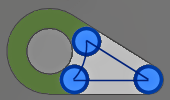
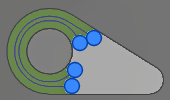

<div id="rest_finishing_useRestMachining"><p>加工する残りのストックを決定します。</p>

<table class="tipTable" cellspacing="10">
<tr>
<td><center></center></td>
</tr><tr>
<td><center><p><b>加工対象領域。</b><br>
緑色で表示されるポケット。</p></center></td>
</tr></table>

<table class="tipTable" cellspacing="10">
<tr>
<td><center></center></td>
<td><center></center></td>
</tr><tr>
<td><center><p><b>前の操作。</b><br>
すべてのストックが除去されるわけではありません。</p></center></td>
<td><center><p><b>取残し仕上げ操作</b><br>
以前の未切削領域が加工されます。</p></center></td>
</tr></table>
</div>